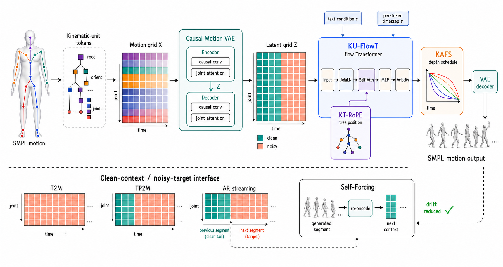

arXiv 2026AI researcher · 3D human motion
Zeyu Ling
I build generative models that understand, create, and precisely control how humans move.
凌泽宇 · Hangzhou, China
Currently
Researcher at Tencent Hunyuan
Education
Ph.D. candidate at Zhejiang University
01
Research direction
Making motion a first-class language for AI.
My work connects structured motion representations, multimodal foundation models, and precise control. I am interested in general motion intelligence that can understand intent, reason over body structure, and produce animation-ready movement.
02
Selected work
Recent research
Structured representations and unified systems for generating, understanding, and controlling human motion.
04
Academic record
Publications
2026arXiv
PRISM: Streaming Human Motion Generation with Per-Joint Latent Decomposition
Zeyu Ling, Qing Shuai, Teng Zhang, Shiyang Li, Bo Han, Changqing Zou
2026ECCV
VersatileMotion: A Unified Framework for Motion Synthesis and Comprehension
Zeyu Ling, Bo Han, Shiyang Li, Hongdeng Shen, Jikang Cheng, Changqing Zou
2025arXiv
SyncLipMAE: Contrastive Masked Pretraining for Audio-Visual Talking-Face Representation
Zeyu Ling, Xiaodong Gu, Jiangnan Tang, Changqing Zou
2026TMM
EnchantDance: Unveiling the Potential of Music-Driven Dance Movement
Bo Han, Yuming Feng, Zeyu Ling, et al.
2025ICME Oral
EPIC: Efficient Prompt Interaction for Text-Image Classification
Xinyao Yu, Hao Sun, Zeyu Ling, Ziwei Niu, Zhenjia Bai, Rui Qin, Yen-Wei Chen, Lanfen Lin
Paper
Code unavailable
2024IJCAI
MCM: Multi-condition Motion Synthesis Framework
Zeyu Ling, Bo Han, Yongkang Wong, Han Lin, Mohan Kankanhalli, Weidong Geng
05
Build in public
Open-source systems
Reusable infrastructure for motion research and large-scale model training.
Motius
A modular framework for human-motion training, evaluation, inference, representation conversion, and reproducible leaderboards.
Model ZooEvaluatorsMotion Toolkit
Source
HFTrainer
accelerate native
HFTrainer
Config-driven training for Hugging Face-native models with Accelerate, Transformers, Diffusers, and PEFT integration.
Source

06
Experience & education
Journey
Algorithm Researcher, Qingyun Program
Tencent · Hunyuan Lab · 3D Generation Center
Leading HYMotion M2M for unified motion repair, in-betweening, and precise control.Algorithm Research Intern
ByteDance · V-AI
Talking-face generation, lip sync, and multi-view texture generation.Algorithm Research Intern
Zhejiang Lab
Led large-scale Text2Video model research with diffusion architectures.Ph.D. in Computer Science
Zhejiang University · State Key Lab of CAD&CG
Researching generative models for 3D human motion and multimodal intelligence.M.Eng. in Software Engineering
Zhejiang University
B.Eng. in Software Engineering
Zhejiang Gongshang University
Let’s connect
Research moves forward through good conversations.
I am always glad to discuss human motion, multimodal generation, and open research collaboration.